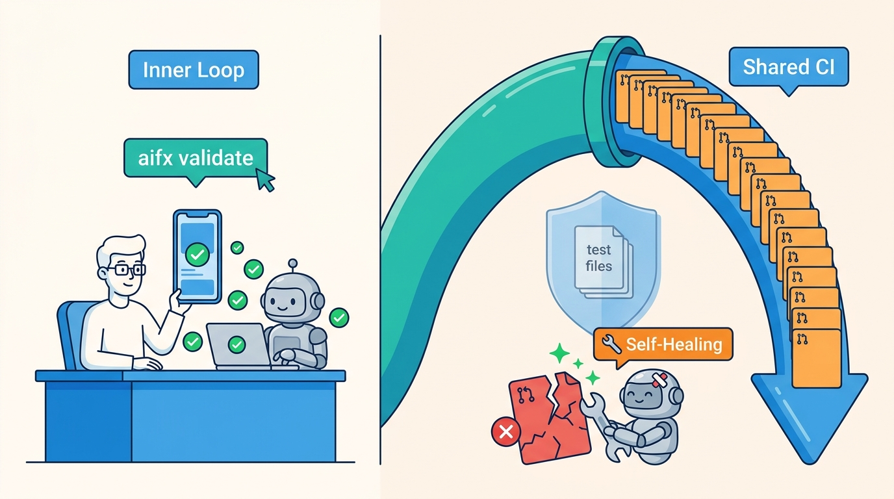

Part III — LIFECYCLE: The Feature Path, Rewired
Shift Left or Drown: Inner-Loop Validation and Self-Healing CI

Image generated by Google Gemini (gemini-3-pro-image-preview)
Part III — LIFECYCLE: The Feature Path, Rewired

Image generated by Google Gemini (gemini-3-pro-image-preview)